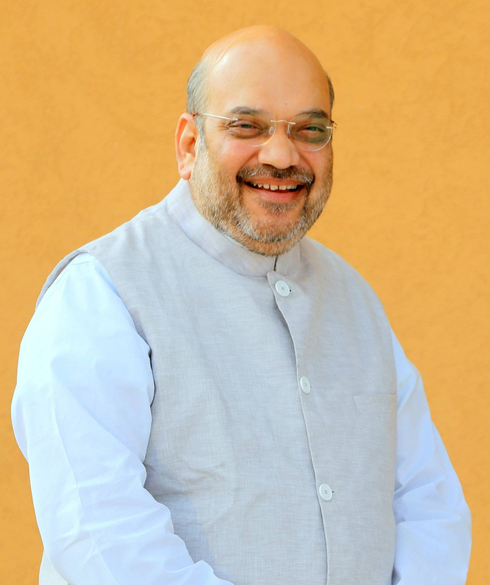

| +919603945875 abcd@gmail.com |
|---|
| Home AboutUs Address |
|---|
Book Description At present, a nativist turn in Indian political theory can be observed. There is a general assumption that the indigenous thought to which researchers are supposed to be (re)turning may somehow be immediately visible by ignoring the colonization of the mind and polity. In such a conception of svaraj (which can be translated as ‘authentic autonomy’), the tradition to be returned to would be that of the indigenous elites. In this book, this concept of svaraj is defined as a thick conception, which links it with exclusivist notions of spirituality, profound anti-modernity, exceptionalistic moralism, essentialistic nationalism and purism. However, post-independence India has borne witness to an alternative trajectory: a thin svaraj. The author puts forward a workable contemporary ideal of thin svaraj, i.e. political, and free of metaphysical commitment. The model proposed is inspired by B.R. Ambedkar's thoughts, as opposed to the thick conception found in the works of M.K. Gandhi, KC Bhattacharya and Ramachandra Gandhi. The author argues that political theorists of Indian politics continue to work with categories and concepts alien to the lived social and political experiences of India's common man, or everyday people. Consequently, he emphasises the need to decolonize Indian political theory, and rescue it from the grip of western theories, and fascination with western modes of historical analysis. The necessity to avoid both universalism and relativism and more importantly address the political predicaments of ‘the people’ is the key objective of the book, and a push for a reorientation of Indian political theory.
In this book, this concept of svaraj is defined as a thick conception, which links it with exclusivist notions of spirituality, profound anti-modernity, exceptionalistic moralism, essentialistic nationalism and purism. However, post-independence India has borne
| India | parliment | president | prime minister |
|  | |||
|---|---|---|---|
| home minister | finance minister | defence minister | agriculture minister |
| MY GOVERNMENT OF INDIA/PARLIMENT/PRESIDENT/PRIME MINISTER |
|---|
| NEWDELHI Democracy/placed in the hands of the people Republic Monarchy Communism Dictatorship |
| DESIGN BY: G.Teja |
|---|